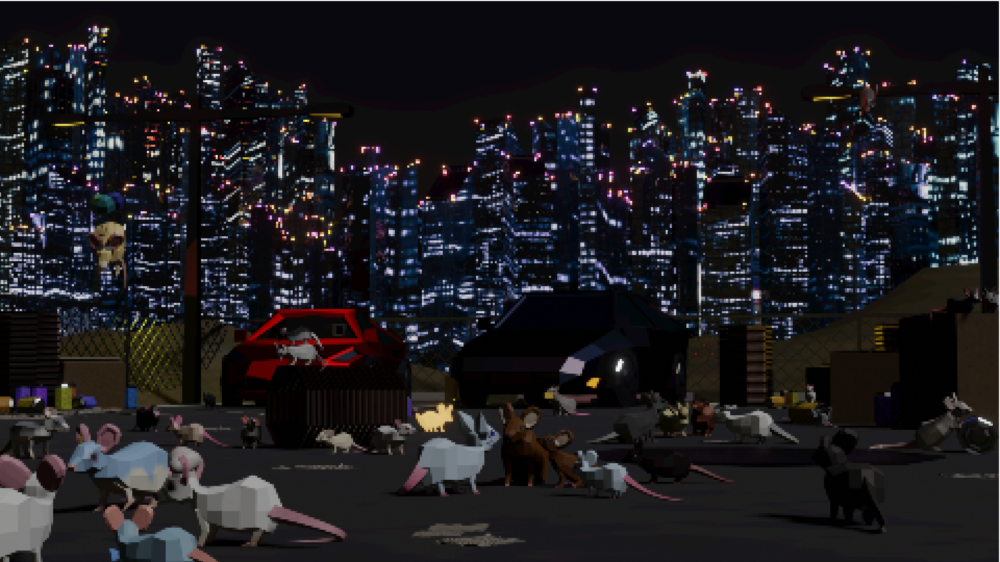

My Angel
Personal art with many meanings.
Personal art with many meanings.

Testing Photoshop effects and making an abstract background more interesting.

This animation was made with Blender grease pencil. I utilized the 3D aspect of the software to create a parallax effect with the background and foreground.

Model created in Blender. Study on character interaction between non rigged models.

Model created in Blender. Made for Art 102 class.

Model created in Blender for Art 74. Testing compositor built into Blender to edit renders.

Made in Blender. Testing physics simulations with water.

Made in Blender. Character animation and interaction with non anthropomorphic models that aren't rigged.
Made in Blender.